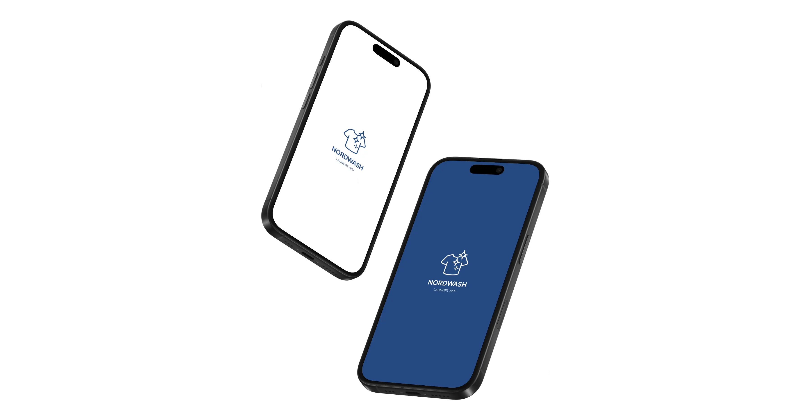
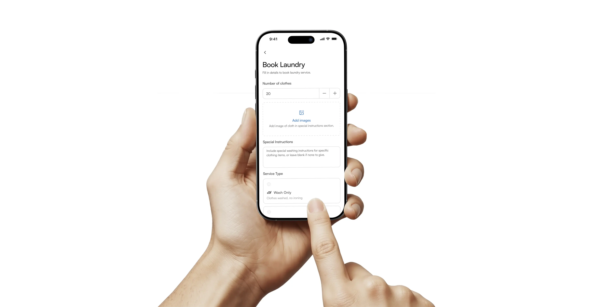
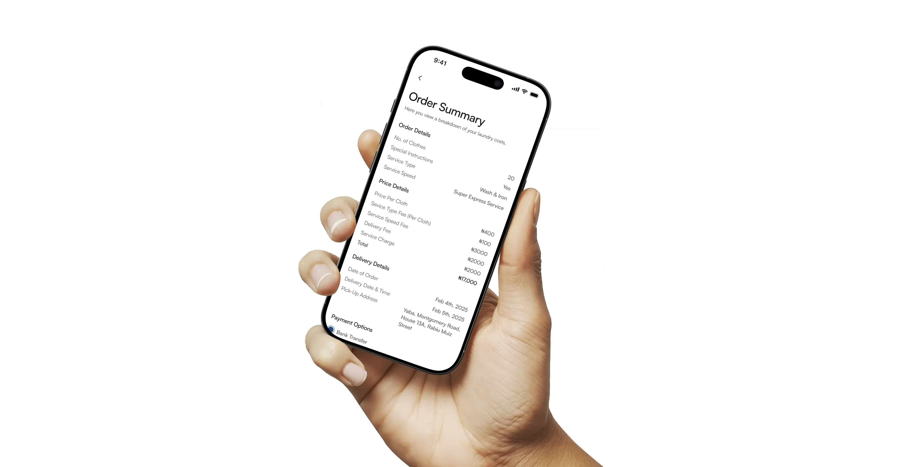
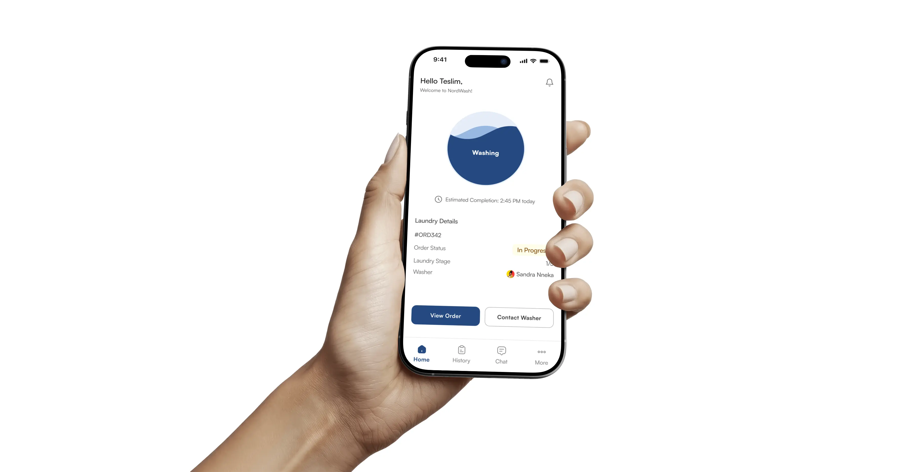
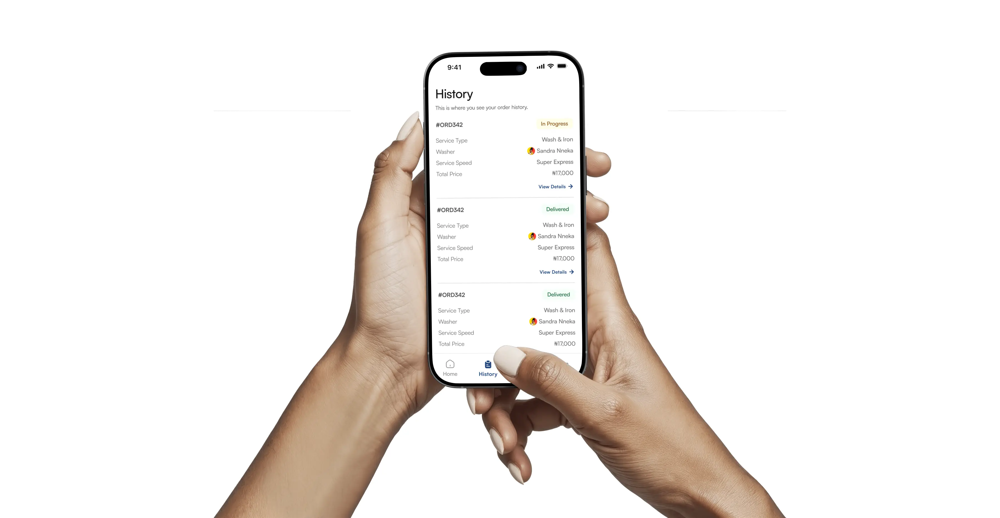

NORDWASH
A Nigeria-based laundry application.
My Role
Product Designer
Tools
Figma & Chat GPT
Timeline
3 Weeks
Work Done
Design & Research
Team
None
| The Problem | How i solved it |
|---|---|
| 1. Laundry services often lack transparency and convenience, hurting user experience and retention. | Built a laundry app that’s transparent, convenient, and user-friendly to boost satisfaction and retention. |
| 2. Laundry services occasionally return clothes to owners damaged. | NordWash lets users upload clothing photos and add special instructions, ensuring personalized care and reducing the risk of damage. |
| 3. Laundry services often lack transparency in their pricing. | NordWash gives a detailed price summary before the user proceeds to make payment. |
| 4. Laundry services often lack transparency in their delivery. | NordWash provides real-time updates with a progress bar, keeping users informed of their cloth status from collection to delivery. |
| 5. Laundry services often lack flexibility in service speed and options, making it inconvenient for customers to find a solution that fits their needs. | NordWash offers flexible service speeds and types, allowing users to choose options that fit their needs, from routine to fast turnaround. |
| 6. Physical laundry services often lack features like order history and service quality ratings, leaving customers unaware of their spending and without an easy way to give on-demand feedback. | NordWash solves this with order history, expense tracking, and service ratings, giving users full visibility and an easy way to provide feedback on-demand. |




